Rappel — fonction logarithme décimal
La fonction logarithme décimal, notée log, est définie pour tout nombre x > 0. C'est la fonction réciproque de la fonction x ↦ 10x. Elle vérifie en particulier :
- log(1) = 0 et log(10) = 1 ;
- log(a × b) = log(a) + log(b) ;
- log(10n) = n, pour tout entier n ;
- fonction réciproque : si y = log(x) alors x = 10y.

📝 QCM interactif de prérequis
Teste tes acquis sur la caractérisation des phénomènes ondulatoires avant de commencer la séquence :
🎬 Vidéo — Le cours en intégralité
Une présentation vidéo de l'ensemble de la séquence (ondes sonores, intensité, niveau sonore) :
Intensité sonore
L'intensité sonore I est la puissance sonore transportée par unité de surface :
Niveau d'intensité sonore (niveau sonore)
La sensation physiologique produite par un son d'intensité sonore I est traduite par le niveau sonore L, exprimé en décibels (dB) :
 >
>
🎚️ Calculatrice interactive — Niveau sonore
Déplace le curseur pour faire varier l'intensité sonore I et observe l'évolution du niveau sonore L, ainsi que sa position sur l'échelle des sons usuels.
📝 Exercice d'application — Doubler le niveau sonore
Pour N sources identiques et incohérentes réunies, l'intensité totale est multipliée par N par rapport à celle d'une seule source, donc le niveau sonore devient :
On cherche N tel que LN = L₂ = 120 dB :
À quoi cela correspond-il ? Un établissement scolaire compte en moyenne de l'ordre de 1 000 élèves. Réunir 1 000 000 de sources sonores identiques reviendrait donc à faire parler simultanément tous les élèves de 1 000 établissements scolaires ! Ce nombre considérable illustre bien le caractère logarithmique, et non linéaire, de l'échelle des décibels : doubler la sensation sonore perçue nécessite de multiplier l'intensité par un facteur immense, sans commune mesure avec un simple doublement du nombre de sources.
📘 Exercices du manuel
Exercices sur les intensités sonores : n° 11, 15, 19, 22, 32 et 42 p.400 à 413.
Atténuation géométrique
Une onde sonore se propage dans les trois dimensions de l'espace : la puissance émise par la source se répartit donc sur une surface de plus en plus grande à mesure que l'on s'éloigne. L'intensité sonore diminue ainsi avec la distance, même en l'absence de tout obstacle : on parle d'atténuation géométrique.
🔊 Animation interactive — Atténuation géométrique
Déplace l'auditeur à l'aide du curseur et observe comment l'intensité sonore perçue diminue lorsque la distance à la source augmente, la puissance émise restant constante (I = P/S).
🖥️ Simulation PhET — Observer l'atténuation géométrique
Ouvre la simulation Sound Waves (PhET Colorado, en français). Active le son, laisse la fréquence et l'amplitude au centre, puis déplace le petit personnage (l'auditeur) du haut-parleur vers le bord de l'écran, en observant à la fois les ondes affichées et le volume perçu.
La puissance sonore P émise par la source se répartit sur une surface S qui augmente avec la distance parcourue (en 3D, cette surface est celle d'une sphère centrée sur la source, S = 4πd²). Comme I = P/S, plus S est grande, plus I est faible : l'énergie sonore n'est pas perdue, elle est seulement répartie sur une surface plus vaste, d'où la diminution du volume perçu par l'auditeur qui s'éloigne, même en l'absence de tout obstacle.
Atténuation par absorption
Lorsqu'un son traverse un milieu matériel (mur, casque, vitrage...), une partie de sa puissance est absorbée par ce milieu : l'intensité sonore diminue alors du fait de cette traversée. On parle d'atténuation par absorption.
🎧 Exercice interactif — Casque anti-bruit
Or A = 10·log(Iincident/Itransmis), donc :
Le casque anti-bruit divise donc l'intensité sonore perçue par un facteur d'environ 3 160, ce qui correspond à une nette amélioration du confort auditif.
📘 Exercices du manuel
Exercices sur l'atténuation : n° 21 et 33 p.403-404, ainsi que l'annale « Casque anti-bruit ».
Qu'est-ce que l'effet Doppler ?
L'effet Doppler est la variation de fréquence d'une onde entre son émission et sa réception, lorsque la distance entre l'émetteur et le récepteur varie au cours du temps. Le récepteur perçoit alors une fréquence fR différente de la fréquence fE émise par la source.
🎬 Regarder la vidéo

🚗 Animation interactive — Fronts d'onde d'une source mobile
Règle la vitesse de la source à l'aide du curseur, puis observe la déformation des fronts d'onde autour d'un observateur fixe (croix noire). Compare le son perçu lorsque la source approche puis s'éloigne de l'observateur.
Rappels — ondes périodiques
- La longueur d'onde λ est la distance parcourue par l'onde pendant une période temporelle T.
- La période temporelle T (en s) est la plus courte durée pour laquelle le phénomène se reproduit identique à lui-même. La fréquence (en Hz) est le nombre de phénomènes par seconde : f = 1/T.
- La vitesse d'une onde est donnée par la relation : vonde = λ/T = λ × f.
- La vitesse d'un corps est donnée par la relation : v = distance parcourue / durée du parcours.
🖥️ Simulation Ostralo — Fronts d'onde d'un émetteur mobile
Ouvre la simulation Effet Doppler (Ostralo). Mets l'émetteur en marche, puis déplace-le vers le récepteur fixe. Utilise la pause pour figer l'image et observer précisément l'espacement des fronts d'onde de part et d'autre de l'émetteur.
🖥️ Ouvrir la simulation Ostralo
À l'arrêt, l'émetteur reste au centre de fronts d'onde circulaires régulièrement espacés et symétriques dans toutes les directions : λE = λR et fE = fR pour tout récepteur, quelle que soit sa position. C'est le mouvement de l'émetteur qui « casse » cette symétrie et provoque le décalage Doppler.
Décalage Doppler
Le décalage Doppler, noté Δf (en Hz), est la différence entre la fréquence reçue fR et la fréquence émise fE :
🎬 Regarder la vidéo
Un observateur fixe observe une source (par exemple une voiture) se déplaçant à la vitesse constante v et émettant des « bips » avec une période TE. La distance entre la source et l'observateur, à l'instant du premier bip, est notée D. Entre l'émission d'un bip et le suivant, la source s'est rapprochée d'une distance d = v × TE : il lui reste alors une distance D − d à parcourir pour atteindre l'observateur.
À t = 0 s, la source émet un premier bip, situé à la distance D de l'observateur. Celui-ci le perçoit à l'instant :
À t = TE, la source émet un second bip, désormais situé à la distance D − d de l'observateur (avec d = v × TE). Celui-ci le perçoit à l'instant :
Comme v > 0 et vonde − v > 0, on a Δf > 0, donc fR > fE : le son est perçu plus aigu, conformément à l'observation qualitative.
✏️ À toi de compléter le raisonnement
La situation est identique au Cas n°1, mais la source s'éloigne désormais de l'observateur : entre deux bips, la distance Source–Observateur augmente de d = v×TE au lieu de diminuer. Sélectionne, à chaque étape, l'expression correcte.
La source s'éloignant, la distance Source–Observateur à l'instant TE vaut D + d (et non D − d comme dans le cas n°1).
Ici Δf < 0, donc fR < fE : le son est perçu plus grave, ce qui est cohérent avec l'observation qualitative d'une source qui s'éloigne.
🖥️ Prise en main du simulateur
Avant de commencer les activités, ouvre le simulateur et repère ses commandes (mise en mouvement de la voiture, réglage de la vitesse, écoute, relevé graphique) :
1️⃣ Détermination de la vitesse de la voiture
Objectif : utiliser l'effet Doppler pour calculer une vitesse.
À partir des fréquences émise fE et reçue fR relevées sur le simulateur, tu dois retrouver la vitesse v de la voiture en inversant l'expression du décalage Doppler établie dans l'onglet D (cas de l'approche ou de l'éloignement selon la situation proposée).
Calculer la vitesse v de la voiture.
Méthode : on repart de l'expression du décalage Doppler établie dans l'onglet D, et on l'inverse pour isoler v.
2️⃣ Radar « à l'oreille »
Objectif : déterminer la fréquence perçue par l'observateur.
Comme la vitesse d'un véhicule (quelques dizaines de m/s) est très petite devant la vitesse du son (vonde ≈ 340 m/s), l'expression exacte du décalage Doppler peut être remplacée par une expression approchée, plus simple à exploiter « à l'oreille ». Tu vas comparer cette approximation à l'expression exacte vue dans l'onglet D.
Calculer la fréquence perçue fR avec l'expression exacte, puis avec l'expression approchée, et comparer les deux résultats.
L'écart entre les deux expressions reste faible (≈ 1 %) pour une vitesse de véhicule usuelle : l'approximation « à l'oreille » est donc satisfaisante dans ce contexte, mais elle ne serait plus valable pour v proche de vonde.
3️⃣ Paramètres d'influence
Objectif : étudier l'influence de la vitesse de la voiture sur l'onde sonore.
En relevant la longueur d'onde, la période et la fréquence du signal à l'arrêt puis pour différentes vitesses de la voiture, tu vas vérifier expérimentalement quelles grandeurs varient avec v (et lesquelles restent inchangées), en cohérence avec les rappels sur les ondes périodiques de l'onglet C.
Déterminer la période TR, la fréquence fR et la longueur d'onde λR perçues par l'observateur, puis comparer vonde avant et après la mise en mouvement de la source.
Bilan : la période et la fréquence perçues changent avec la vitesse de la source, tout comme la longueur d'onde. En revanche, vonde ne dépend que du milieu de propagation (l'air) : elle reste égale à 340 m·s⁻¹, que la source soit à l'arrêt ou en mouvement.
4️⃣ Décalage Doppler
Objectif : relier période, fréquence et effet Doppler.
À partir d'un relevé graphique des périodes émise TE et reçue TR, tu vas retrouver les fréquences correspondantes (f = 1/T), calculer le décalage Doppler Δf, puis en déduire la vitesse de la source — une application numérique complète de la démarche établie pas à pas dans l'onglet D.
Déterminer les fréquences fE et fR, le décalage Doppler Δf, puis la vitesse v de la voiture.
On retrouve la démarche complète : lecture graphique → périodes → fréquences → décalage Doppler → vitesse, en réutilisant l'expression établie pas à pas dans l'onglet D.
5️⃣ Longueur d'onde et vitesse
Objectif : établir une relation entre longueur d'onde et vitesse de propagation.
À partir des relations T = 1/f et vonde = λ/T, tu vas établir puis exploiter la relation λ = vonde/f, valable aussi bien pour une onde sonore que pour une onde électromagnétique (utile pour l'annale « Galaxie d'Andromède » de l'onglet D).
Établir la relation entre λ et vonde à partir de T = 1/f et vonde = λ/T, puis calculer la longueur d'onde λ correspondante.
Cette relation λ = vonde/f est générale : elle s'applique aussi bien à une onde sonore (vonde = célérité du son) qu'à une onde électromagnétique (λ = c/f), comme dans l'annale « Galaxie d'Andromède » de l'onglet D.
6️⃣ Précision d'une mesure
Objectif : évaluer une incertitude de mesure.
En répétant plusieurs fois un même chronométrage sur le simulateur, tu vas calculer une valeur moyenne et une incertitude-type (écart-type) associées à cette mesure — une compétence expérimentale transversale, indépendante du contexte de l'effet Doppler mais mobilisable dans toute mesure répétée en physique-chimie.
Calculer la valeur moyenne T̄, l'incertitude-type u(T), puis exprimer le résultat sous la forme T = T̄ ± U(T) avec un facteur d'élargissement k = 2.
Cette démarche d'évaluation d'une incertitude de type A (mesures répétées) est transversale : elle s'applique à toute mesure expérimentale en physique-chimie, pas seulement à l'effet Doppler.
Problème : faut-il croire le vendeur ? Une différence de 3 dB modifie-t-elle de manière notable la perception auditive ?
📄 Documents
Deux étiquettes énergie de lave-vaisselle (niveau sonore en dB), une échelle de correspondance entre intensité sonore I (en W·m⁻²) et niveau d'intensité sonore L (en dB), et des affiches de prévention du bruit illustrant l'addition de sons émis par des véhicules.
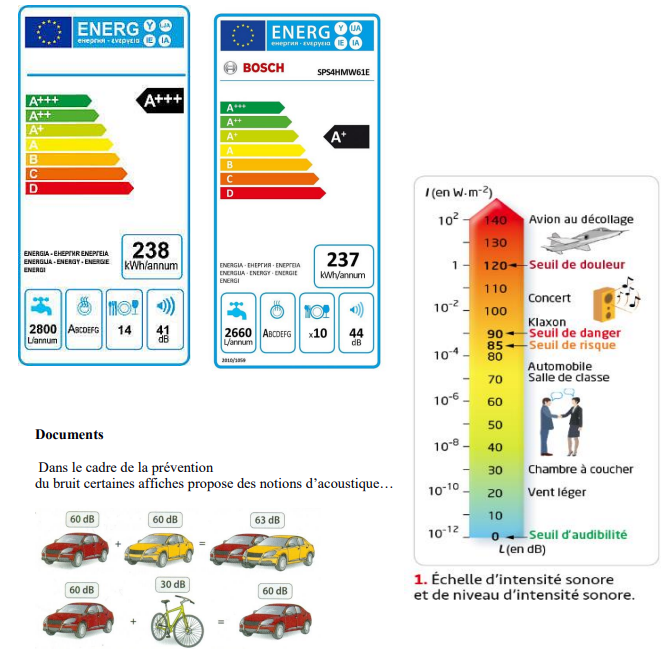
La fonction logarithme décimal (log) est la fonction réciproque de la fonction puissance de 10 : quelle que soit la grandeur physique notée X, log(10X) = X.
Propriétés : log(a×b) = log a + log b | log(a/b) = log a − log b | log(Xn) = n·log X
1️⃣ La surface dans « par unité de surface »
Dans la définition de l'intensité sonore I, de quelle surface parle-t-on dans « par unité de surface » ?
2️⃣ Unité de l'intensité sonore
Justifier que l'intensité sonore s'exprime en W·m⁻².
3️⃣ Étendue de l'intensité sonore
a. Comparer les valeurs minimale et maximale de l'intensité sonore des sons audibles.
b. Quel est l'inconvénient majeur de cette échelle d'intensité ?
4️⃣ Niveau d'intensité sonore
a. Calculer les valeurs minimale et maximale du niveau d'intensité sonore des sons audibles sur la gamme proposée sur le graphe de correspondance entre L et I.
b. Quelle est l'utilité de cette autre échelle ?
5️⃣ Compléter un tableau I / L
a. Compléter le tableau de correspondance entre I et L pour les valeurs proposées dans le document.
b. Que constate-t-on en relation avec les deux situations proposées sur les affiches (voitures) ?
6️⃣ Pourquoi les niveaux ne s'additionnent pas
Les intensités sonores s'additionnent mais pas les niveaux d'intensité sonore, pourquoi ?
7️⃣ Le vendeur a-t-il raison ?
À la lumière de vos réponses précédentes, le vendeur a-t-il raison d'affirmer qu'une différence de 3 dB est une différence faible ?
8️⃣ Boîte de nuit et scooters
Un scooter a un niveau sonore de 90 dB et une boîte de nuit de 130 dB. À combien de scooters équivaut une boîte de nuit ?
Problème : une habitation est située à une distance d = 200 m de cette usine et est à vendre, l'achèteriez-vous ?
📄 Documents
Document 1 : échelle du niveau d'intensité sonore (en dB) et du risque associé (aucun risque, fatigue, incomfort, risque sérieux, danger).
Document 2 : l'intensité sonore I à une distance d d'une source émettant dans toutes les directions est liée à la puissance sonore P de cette source par I = P/S, avec S la surface de la sphère de rayon d (S = 4πd²).
Donnée : I₀ = 1,0×10⁻¹² W·m⁻² (intensité sonore de référence).
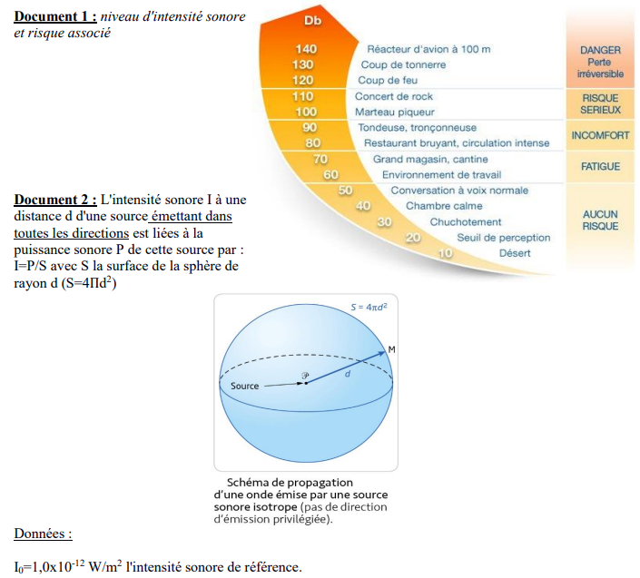
1️⃣ Schéma de la situation
Faire un schéma de la situation.
2️⃣ Relation entre L et I
Rappeler la relation liant le niveau d'intensité sonore L à l'intensité sonore I.
3️⃣ Calcul du niveau sonore à l'habitation
Calculer le niveau d'intensité sonore L au niveau de l'habitation, à la distance d = 200 m de l'usine.
4️⃣ Conclusion
Le niveau d'intensité sonore obtenu au niveau de l'habitation est-il acceptable ? Justifier à l'aide du document 1.
Quelle expression lie le décalage de fréquence à la vitesse de la source ?
📄 Documents
DOC. 1 — À l'écoute d'une sirène : la sirène d'un camion de pompiers retentit. L'observateur A, qui voit le camion s'approcher, entend un son plus aigu que le conducteur du camion. L'observateur B, qui voit le camion s'éloigner, entend un son plus grave que le conducteur.
DOC. 2 — Modélisation de la situation : A et B sont deux observateurs immobiles. Une source S, située sur la droite (AB) entre A et B, émet une onde sinusoïdale de période T se propageant vers A et vers B avec une célérité v. La source se déplace suivant (AB) à une vitesse de valeur constante vS telle que vS < v. À la date t₀ = 0, la source est en S₀ et commence à émettre. L'élongation de l'onde y est maximale. Le schéma représente les différentes positions S₀, S₁, S₂ et S₃ occupées par la source aux dates t₀ = 0, t₁ = T, t₂ = 2T, t₃ = 3T ainsi que les points du milieu où l'élongation de l'onde est maximale à ces mêmes dates. La longueur d₀ correspond à la distance parcourue par l'onde pendant une durée égale à 3T.
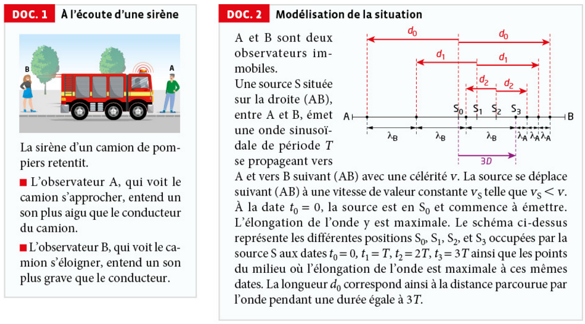
1 · Analyser-Raisonner
a. En utilisant le DOC.1, comparer les fréquences fA et fB des signaux reçus par les observateurs A et B à la fréquence f du signal émis.
b. Justifier que les longueurs d'onde λA et λB représentées sur le schéma du DOC.2 sont en accord avec le phénomène décrit dans le DOC.1.
2 · Réaliser
a. Exprimer les longueurs d₀, d₁ et d₂ en fonction de la longueur d'onde λ = vT.
b. Exprimer la longueur D parcourue par la source pendant une période T.
c. En déduire, à l'aide de la figure du DOC.2, une relation entre λ, λA et D, puis entre λ, λB et vS.
d. Exprimer le décalage de longueur d'onde λB − λA en fonction de λ, v et vS.
e. Exprimer de même le décalage λ − λA pour l'observateur A, puis λB − λ pour l'observateur B, en fonction de vS, v et λ.
3 · Valider
a. Vérifier que les décalages en fréquence s'expriment par les relations fA − f = f × vS/(v − vS) et fB − f = −f × vS/(v + vS).
b. Vérifier que, lorsque vS est négligeable devant v, ces expressions se simplifient sous la forme |Δf|/f = vS/v, avec Δf = fA − f ou Δf = f − fB.
c. Envisager une application de cette relation dans le domaine des ondes acoustiques et électromagnétiques.
1. Analyser-Raisonner
2. Réaliser
L'onde émise en S₁ se propage pendant 2T avant t₃ : d₁ = v×2T = 2λ.
L'onde émise en S₂ se propage pendant T avant t₃ : d₂ = v×T = λ.
Avec D = vS×T = vS×λ/v (car T = λ/v), on obtient : λA = λ(1 − vS/v) et λB = λ(1 + vS/v).
3. Valider
De même, fB = v/λB = f×v/(v+vS), donc fB − f = f×[v−(v+vS)]/(v+vS) = −f×vS/(v+vS). Les deux relations sont vérifiées.
Le conducteur de la voiture est-il en infraction pour excès de vitesse ?
📄 Documents
DONNÉES 1 : dans le référentiel terrestre, la valeur de la vitesse vS d'une source S s'approchant en direction d'un observateur A immobile et s'éloignant dans la même direction d'un observateur B immobile, s'exprime par :
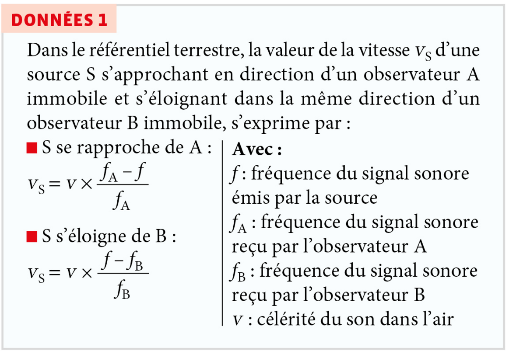
DONNÉES 2 : s'il n'y a pas d'indication particulière, en ville, la vitesse est limitée à 50 km·h⁻¹ (Code de la route, article R 413-3). La tolérance est de 5 km·h⁻¹ pour les vitesses inférieures à 100 km·h⁻¹ (Arrêté du 7 janvier 1991).
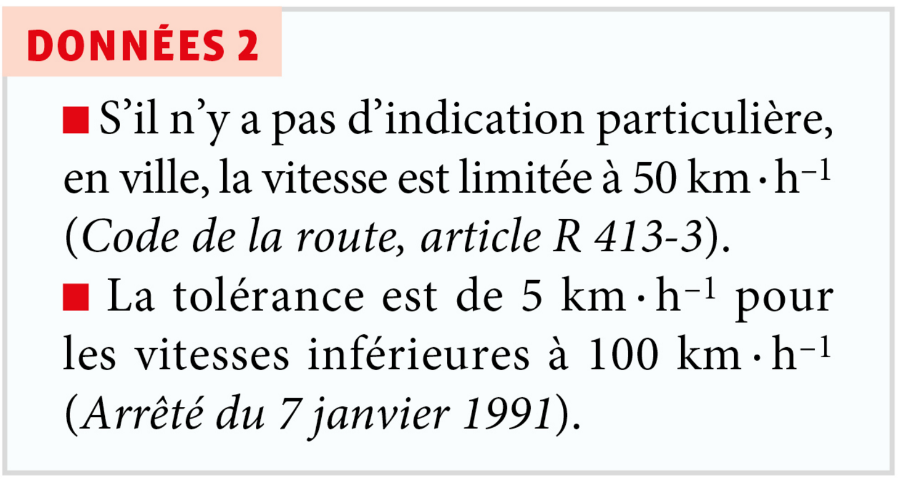
DOCUMENT — Représentation de la situation : au début et à la fin de la bande son, quand la voiture est loin du smartphone, on peut considérer que la direction de la vitesse est confondue avec la direction voiture-smartphone. Dans ces conditions, les relations des DONNÉES 1 sont applicables.
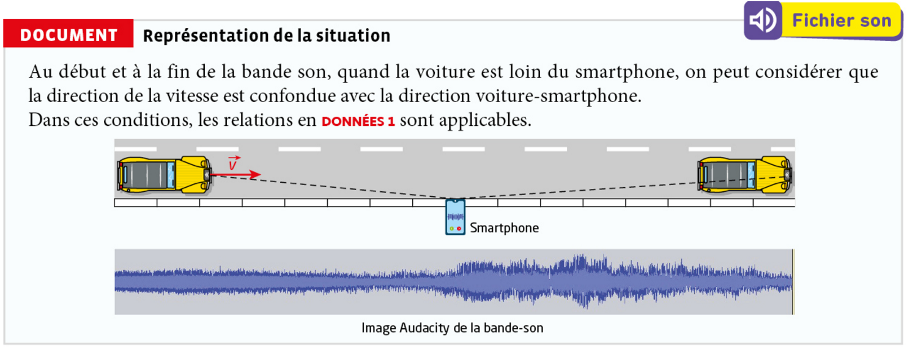
1 · Analyser-Raisonner 🧰 Matériel
Matériel disponible : un ordinateur muni de logiciel(s) permettant d'analyser un son.
À l'aide du matériel disponible, proposer une expérience permettant de mesurer la vitesse du véhicule.
2 · Réaliser
Réaliser l'expérience proposée.
- Ouvrir Audacity (logiciel gratuit). S'il n'est pas installé, télécharger la version correspondant à ton système sur audacityteam.org, puis l'installer.
- Importer le fichier son : menu Fichier → Ouvrir (ou glisser-déposer le fichier
audio-doppler-klaxon.wavdirectement dans la fenêtre d'Audacity). La piste audio apparaît sous forme d'onde (représentation temporelle du signal).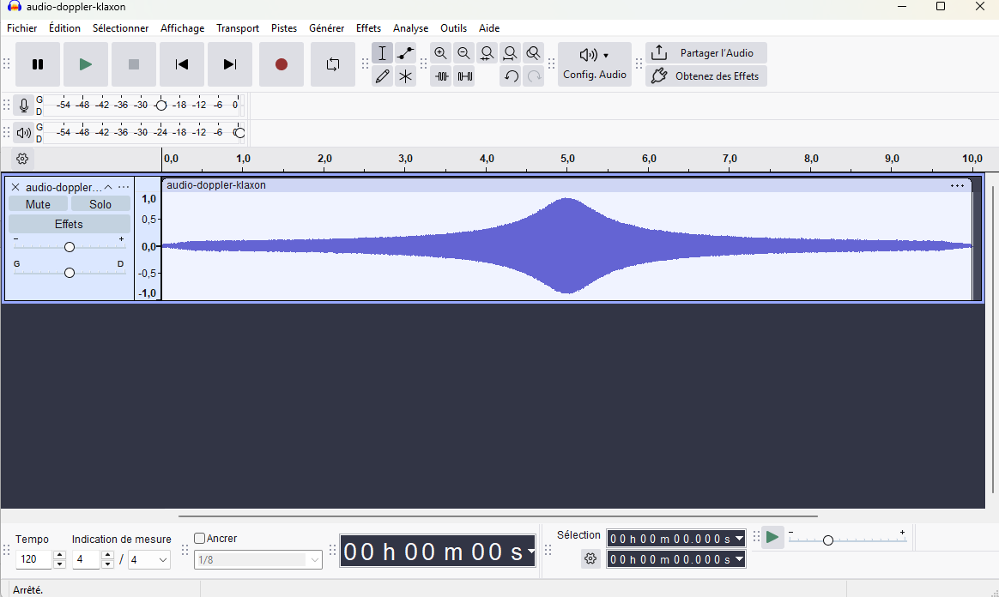
Forme d'onde après import : on distingue déjà le renflement au moment du passage de la voiture. - Passer en vue spectrogramme : cliquer sur l'icône ⋯ en haut à droite de la piste (menu déroulant de la piste) → choisir Spectrogramme à la place de « Forme d'onde ». La piste affiche alors la fréquence (axe vertical) en fonction du temps (axe horizontal), avec une couleur qui code l'intensité.
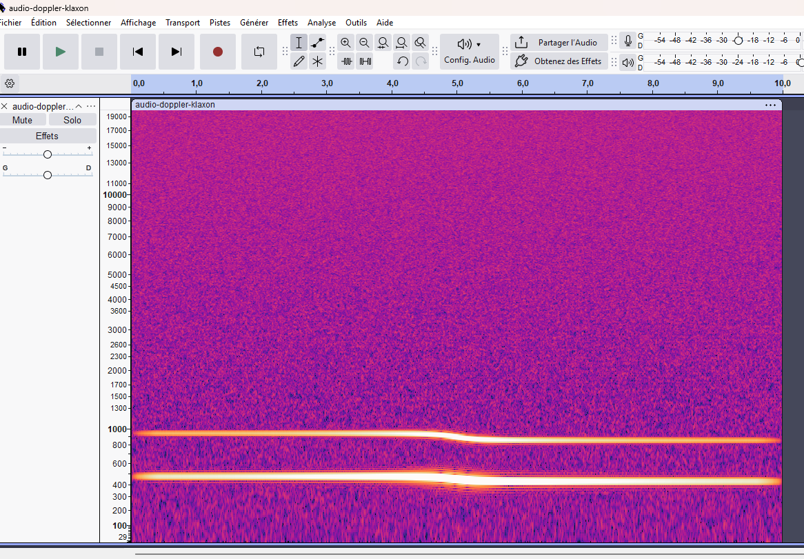
Vue spectrogramme : on distingue deux bandes horizontales (la fondamentale et son harmonique) avec une légère bascule vers le milieu. - Repérer les deux zones stables : sur le spectrogramme, on distingue une bande horizontale à fréquence plus élevée au tout début de l'enregistrement (la voiture est encore loin et s'approche) et une bande horizontale à fréquence plus basse à la toute fin (la voiture s'éloigne). C'est dans ces deux zones, où la voiture est encore loin du smartphone, que les relations des DONNÉES 1 s'appliquent.
- Sélectionner l'intervalle de temps correspondant à la première zone stable (par exemple entre 0,5 s et 1,5 s) en cliquant-glissant avec la souris sur cette portion de la piste.
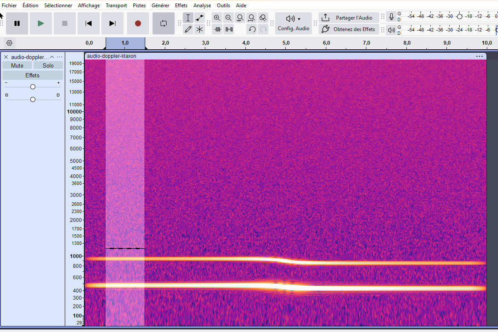
La zone sélectionnée apparaît en surbrillance sur toute la hauteur de la piste. - Mesurer la fréquence précisément : menu Analyse → Tracer le spectre (« Plot Spectrum »). Une fenêtre s'ouvre avec un graphe amplitude/fréquence : le pic le plus haut correspond à la fréquence dominante du son sur l'intervalle sélectionné. Déplacer le curseur sur ce pic pour lire sa valeur exacte en Hz (affichée en bas de la fenêtre, à côté de « Pic : »). Noter cette valeur : c'est fA (fréquence reçue pendant l'approche).
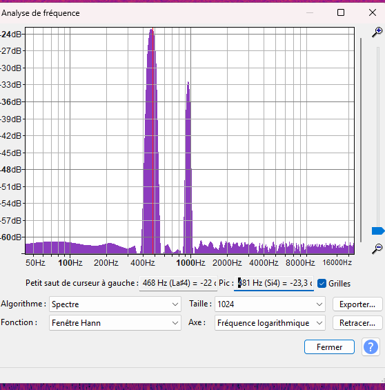
Exemple de lecture : ici le pic est à 481 Hz, ce sera fA. - Refaire la même mesure sur la fin de l'enregistrement (par exemple entre 8,5 s et 9,5 s), toujours avec Analyse → Tracer le spectre. La valeur du pic obtenue est fB (fréquence reçue pendant l'éloignement).
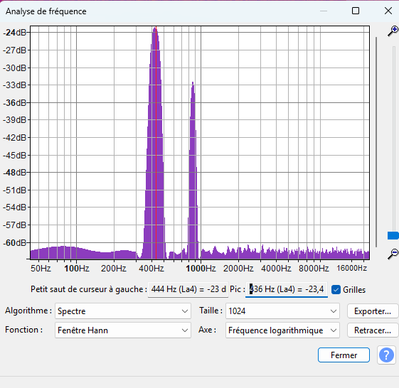
Exemple de lecture : ici le pic est à 436 Hz, ce sera fB. - Calculer la vitesse vS : à partir des deux relations des DONNÉES 1, on peut éliminer la fréquence f (inconnue) émise par le klaxon pour obtenir une relation ne faisant intervenir que des grandeurs mesurées :
vS = v × (fA − fB) / (fA + fB)avec v = 340 m·s⁻¹ (célérité du son dans l'air). Remplacer fA et fB par les valeurs mesurées pour obtenir vS en m·s⁻¹, puis convertir en km·h⁻¹ (× 3,6).
- Conclure : comparer la vitesse obtenue à la vitesse limite autorisée augmentée de la tolérance (DONNÉES 2), pour dire si le conducteur est en infraction.
3 · Valider
a. Compte tenu de la tolérance accordée aux automobilistes et du résultat obtenu à l'issue de l'expérience, justifier que le conducteur de la voiture est ou n'est pas en infraction pour excès de vitesse.
b. Mettre en commun les résultats de la classe. Lister des sources d'erreur expliquant la dispersion des résultats et discuter de l'influence du protocole.
1. Analyser-Raisonner
2. Réaliser
fA ≈ 473 Hz (approche) | fB ≈ 429 Hz (éloignement)
vS = 340×(473 − 429)/(473 + 429) = 340×44/902 ≈ 16,6 m·s⁻¹
3. Valider
Exercice 17 : Résoudre sans calculatrice
- log(a×b) = log a + log b
- log(aⁿ) = n×log a
- log 5,0 = 0,70
- log 10 = 1
Le niveau d'intensité sonore s'écrit L = 10·log(I/I₀), avec I₀ = 1,0 × 10⁻¹² W·m⁻² (seuil d'audibilité).
Or log(5,0 × 10⁷) = log 5,0 + log(10⁷) = log 5,0 + 7×log 10, donc :
Exercice 18 : Calculer l'intensité sonore du seuil de douleur
- L = 10 log(I/I₀)
- y = log x ⟺ x = 10ʸ avec y ∈ ℝ, x ∈ ℝ⁺*
On part de L = 10·log(I/I₀), avec I₀ = 1,0 × 10⁻¹² W·m⁻² (seuil d'audibilité).
Or log(I/I₀) = 12 ⟺ I/I₀ = 10¹², donc :
Exercice 20 : Se mettre en sécurité
La baisse de niveau sonore nécessaire est : ΔL = 110 − 85 = 25 dB.
Chaque doublement de distance fait baisser le niveau de 6 dB. Il faut donc un nombre entier n de doublements tel que 6n ≥ 25 dB, soit n ≥ 25/6 ≈ 4,17, donc n = 5 doublements (avec n = 4, la baisse ne serait que de 24 dB, insuffisante).
Il faut donc se placer à au moins 64 m de l'enceinte pour que le niveau sonore soit inférieur à 85 dB (à cette distance, L = 110 − 5×6 = 80 dB).
Exercice 26 : Apprendre à rédiger
a. Lorsque l'ambulance s'approche de l'enfant, la hauteur (fréquence perçue) et l'intensité du son entendu augmentent ; lorsqu'elle s'éloigne, elles diminuent toutes les deux. Le timbre du son n'est a priori pas modifié. Cet effet, lié au mouvement relatif de la source par rapport au récepteur, est l'effet Doppler.
b. fR est la fréquence perçue par le récepteur (l'enfant), f est la fréquence émise par la source (la sirène), v est la célérité du son dans l'air (le milieu de propagation) et vS est la vitesse de la source (l'ambulance) par rapport au référentiel terrestre, dans lequel l'enfant est immobile.
c. Lorsque la source s'éloigne du récepteur, la fréquence perçue fR est inférieure à la fréquence émise f, donc fR/f < 1. Pour que v/(v ± vS) soit inférieur à 1, il faut que le dénominateur soit supérieur à v, ce qui correspond au signe + : v/(v + vS). Le signe + correspond donc à la situation où la source s'éloigne du récepteur.
Exercice 30 : Détecter une exoplanète
Lorsqu'une planète gravite autour d'une étoile, le couple étoile-exoplanète tourne autour du centre d'inertie de l'ensemble. Si le plan de révolution n'est pas perpendiculaire à la direction d'observation, l'étoile s'approche et s'éloigne périodiquement de la Terre.
Pour la raie α du spectre de l'hydrogène (raie Hα), la longueur d'onde de la lumière reçue d'une étoile varie entre 656,18 nm et 656,38 nm alors qu'au laboratoire, elle vaut λα = 656,28 nm.
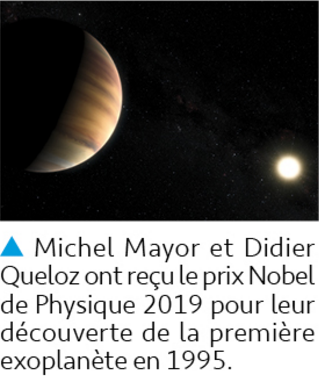
a. Si l'étoile était immobile par rapport à la Terre, la longueur d'onde reçue serait constante et égale à la valeur mesurée au laboratoire, λα = 656,28 nm. Or la longueur d'onde reçue varie au cours du temps entre 656,18 nm et 656,38 nm : cette variation périodique de la longueur d'onde reçue (effet Doppler) montre que l'étoile se rapproche puis s'éloigne alternativement de la Terre, donc qu'elle possède bien un mouvement dans la direction d'observation.
b. Le décalage Doppler correspond à l'écart entre la longueur d'onde extrême et la longueur d'onde de référence :
D'après la relation non relativiste de l'effet Doppler, Δλ/λα = v/c, donc :
L'étoile tourne donc autour du centre d'inertie du système avec une vitesse d'environ 46 km·s⁻¹.
Exercice 34 : Reculer en toute sécurité
Il ne s'agit pas d'un effet Doppler, pour deux raisons :
1. L'effet Doppler concerne le décalage de la fréquence perçue d'une onde continue émise par une source, lorsqu'il existe un mouvement relatif entre la source et le récepteur pendant la propagation de cette onde. Or ici, chaque bip a la même hauteur (même fréquence acoustique) : ce n'est pas le son lui-même qui change de fréquence, mais uniquement la cadence de répétition des bips (leur fréquence de répétition) qui augmente.
2. La variation de cette cadence n'est pas due à un mouvement relatif entre une source sonore et un récepteur au sens de l'effet Doppler : elle est générée électroniquement par le calculateur du véhicule à partir de la distance mesurée par un capteur (ultrasons ou radar), et non par la perception directe d'une onde sonore décalée en fréquence par le mouvement.
Exercice 35 : Calculer un rapport d'énergie
On part de R = 10 log(𝓔incidente/𝓔transmise).
Or log(𝓔incidente/𝓔transmise) = 5 ⟺ 𝓔incidente/𝓔transmise = 10⁵, donc :
Une paroi d'indice d'affaiblissement acoustique R = 50 dB laisse donc passer 100 000 fois moins d'énergie sonore qu'elle n'en reçoit.
Exercice 36 : Vitesse de fuite de la galaxie NGC 3627
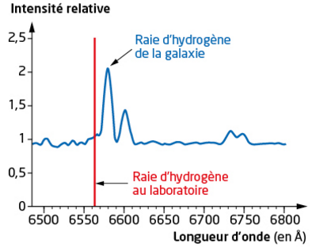
a. Les deux raies ne sont pas superposées car la longueur d'onde de la raie émise par l'hydrogène de la galaxie n'est pas égale à celle mesurée au laboratoire pour le même élément : ce décalage s'explique par l'effet Doppler, dû au mouvement relatif de la galaxie par rapport à la Terre.
b. La raie de la galaxie est décalée vers les grandes longueurs d'onde (vers le rouge) par rapport à la raie de référence obtenue au laboratoire. Un tel décalage vers le rouge correspond à un éloignement de la source : la galaxie NGC 3627 s'éloigne de la nôtre.
c. D'après le graphique, la raie de référence au laboratoire est à λ ≈ 656,3 nm (6563 Å) et la raie de la galaxie est à λ' ≈ 658,0 nm (6580 Å).
D'après la relation non relativiste de l'effet Doppler, Δλ/λ = v/c, donc :
La galaxie NGC 3627 s'éloigne donc de nous à une vitesse d'environ 780 km·s⁻¹.
Exercice 37 : Rendement d'une enceinte
a. On convertit d'abord le niveau sonore à 10 m en intensité sonore, avec I₀ = 1,0 × 10⁻¹² W·m⁻² :
D'après I = 𝒫/(4πd²), la puissance acoustique rayonnée par les enceintes vaut :
Avec cette même puissance, l'intensité sonore à 1,0 m est :
Soit un niveau sonore à 1,0 m :
b. Le rendement correspond au niveau sonore qui serait obtenu à 1,0 m avec une puissance électrique de seulement 1,0 W, alors que la mesure précédente correspond à 𝒫HP = 16 W. Comme l'intensité sonore est proportionnelle à la puissance électrique, l'écart de niveau entre les deux puissances est :
Le rendement, obtenu avec une puissance électrique 16 fois plus faible, est donc inférieur de 12 dB au niveau trouvé en a) :
Exercice 38 : Radar routier
Les radars sont installés de telle sorte que l'angle α entre la direction de visée et l'axe de la route soit égal à 25° (la valeur de α est ajustée lors de l'installation). Dans ces conditions, le décalage de fréquence dû à l'effet Doppler se calcule grâce à l'expression : |Δf| = 2 cos α × f × v/c.
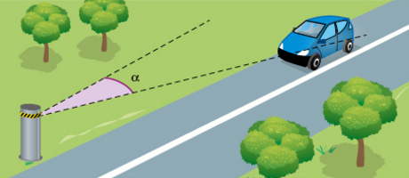
a. On convertit les vitesses en m·s⁻¹ : v₁ = 98/3,6 ≈ 27,2 m·s⁻¹ et v₂ = 90/3,6 = 25,0 m·s⁻¹. Avec cos 25° ≈ 0,906 :
b. Le radar calcule la vitesse du véhicule à partir du décalage Δf mesuré en utilisant la formule v = Δf × c/(2 cos α × f), avec la valeur d'angle α = 25° qu'il est censé avoir. Or l'angle réellement installé est de 9°, avec cos 9° ≈ 0,988 > cos 25° ≈ 0,906. Pour une vitesse réelle donnée, le décalage Δf effectivement produit avec cet angle de 9° est donc plus grand que celui qui serait produit avec 25°. Le calculateur du radar, qui divise toujours par cos 25° (et non par cos 9°), va alors surestimer la vitesse dans le rapport cos 9°/cos 25° ≈ 1,09, soit une vitesse calculée supérieure d'environ 9 % à la vitesse réelle du véhicule. Ce défaut d'installation pose donc un problème de fiabilité de la mesure : des véhicules respectant la limitation de vitesse pourraient être injustement verbalisés pour excès de vitesse.
Exercice 39 : Record de vitesse sur rail
Le décalage Doppler en fréquence à l'approche du train roulant à une vitesse de valeur constante vS en direction d'un observateur immobile est tel que : |Δf| = f × vS/(v − vS), v étant la célérité des ondes sonores.
a. Pendant une période T = 1/f du son émis, la source s'éloigne de l'observateur d'une distance supplémentaire vST. La distance entre deux fronts d'onde successifs, telle que perçue par l'observateur, est donc étirée : elle vaut λR = vT + vST = (v + vS)T, au lieu de λ = vT dans le cas d'une source immobile. La fréquence perçue est donc :
Le décalage en fréquence vaut alors :
b. La fréquence perçue à l'approche est fR,approche = f + |Δf|approche = f × v/(v − vS), et celle à l'éloignement est fR,éloignement = f − |Δf|éloignement = f × v/(v + vS). La condition « fréquence perçue deux fois plus élevée à l'approche qu'à l'éloignement » s'écrit :
En simplifiant par f × v puis en développant :
Avec v ≈ 340 m·s⁻¹ pour la célérité du son dans l'air :
Cette estimation, obtenue par une méthode acoustique assez simple, est nettement inférieure à la vitesse officielle du record (574,8 km·h⁻¹), ce qui illustre les limites de précision de ce genre de mesure « à l'oreille ».
Exercice 40 : Retour sur l'ouverture du chapitre
a. On convertit d'abord Le = 60 dB à 1 m en intensité sonore, avec I₀ = 1,0 × 10⁻¹² W·m⁻² :
À 200 m, l'intensité d'un seul étourneau devient (loi en 1/d²) :
L'intensité sonore d'un avion à 200 m correspondant à La = 125 dB est :
Pour N étourneaux incohérents à 200 m, l'intensité totale est N × Ie(200 m). Pour atteindre Ia(200 m), il faut :
Ce nombre (environ 130 milliards d'oiseaux) est totalement irréaliste : il illustre le caractère logarithmique de l'échelle des décibels, qui rend le niveau sonore d'un avion très difficile à atteindre avec des sources aussi faibles individuellement que des chants d'oiseaux.
b. Pour une nuée réaliste de N' = 1,0 × 10⁶ étourneaux à 200 m, l'intensité totale est :
Soit un niveau sonore :
Ce niveau, comparable à celui d'une conversation animée ou d'une circulation routière modérée, reste très inférieur aux seuils de risque auditif (environ 80-85 dB pour une exposition prolongée). Il n'est donc pas nécessaire de porter un casque antibruit pour admirer le ballet d'une nuée d'étourneaux.
Exercice 43 : Une expérience historique
D'après Nicolas Witkowski, Une histoire sentimentale des sciences, Éditions du Seuil, 2003.
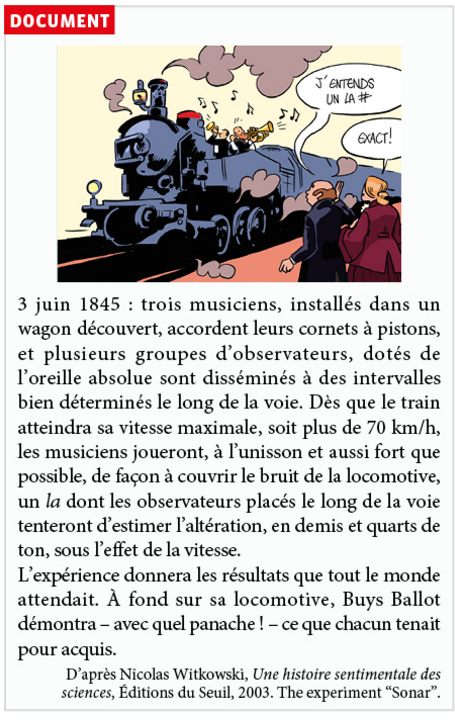
Parmi les relations (1) et (2) ci-dessous, indiquer celle qui lie la fréquence f de l'onde émise par les musiciens à la fréquence fObs de l'onde perçue par les observateurs lorsque la locomotive s'approche d'eux à la vitesse vL.
| Note | Ré₃ | Mi₃ | Fa₃ | Sol₃ | La₃ |
|---|---|---|---|---|---|
| Fréquence (en Hz) | 294 | 330 | 349 | 392 | 440 |
a. Buys Ballot cherche à mettre en évidence l'effet Doppler (Doppler-Fizeau), c'est-à-dire le décalage de la fréquence d'une onde perçue par un observateur lorsque la source qui l'émet est en mouvement par rapport à lui.
b. Ce phénomène consiste en un écart entre la fréquence f de l'onde émise par une source et la fréquence fObs perçue par un observateur, dès lors qu'il existe un mouvement relatif entre la source et l'observateur : la fréquence perçue augmente quand la source se rapproche, et diminue quand elle s'éloigne. Dans l'expérience, les musiciens jouent le rôle de la source (fréquence f connue et fixe), tandis que les observateurs, immobiles le long de la voie, jouent le rôle des récepteurs ; leur oreille absolue leur permet d'estimer directement, en demis et quarts de ton, l'altération de la note perçue au passage du train, ce qui permet de vérifier expérimentalement que la fréquence perçue varie bien avec la vitesse de la source.
c. Le son perçu à l'approche étant plus aigu, on a fObs > f. C'est la relation (1) qui convient : fObs = f × v/(v − vL), le dénominateur (v − vL) étant plus petit que v, ce qui donne bien fObs > f (la relation (2) donnerait au contraire une fréquence perçue plus faible que f, incompatible avec l'énoncé).
d. On convertit la vitesse maximale du train : vL = 70/3,6 ≈ 19,4 m·s⁻¹, et on prend v ≈ 340 m·s⁻¹ pour la célérité du son dans l'air.
Cette variation relative ne dépend que de v et de vL, pas de la fréquence f de la note jouée : elle vaut environ 6,1 % quelle que soit la note choisie dans le tableau (Ré₃, Mi₃, Fa₃, Sol₃ ou La₃).
Or, d'après la donnée, un écart de 6 % correspond à un demi-ton. L'altération produite par la vitesse du train (≈ 6,1 %) correspond donc à un décalage d'environ un demi-ton, ce qui est largement supérieur à la plus petite variation détectable mentionnée dans l'énoncé (le quart de ton, ≈ 3 %). Des observateurs à l'oreille absolue peuvent donc percevoir sans ambiguïté ce décalage : l'expérience donne bien un résultat concluant, quelle que soit la note effectivement jouée par les musiciens.
À titre d'exemple, si les musiciens jouent un La₃ (440 Hz), les observateurs perçoivent à l'approche fObs ≈ 440 × 340/320,6 ≈ 467 Hz, soit une note très proche du La♯₃ (≈ 466 Hz) — exactement ce qu'entend l'observateur de la bande dessinée !
Exercice 44 : Doppler sanguin
- v = 1540 m·s⁻¹
- Si vG est la valeur de la vitesse d'écoulement d'un fluide incompressible dans une canalisation de section droite S, la conservation du débit impose que le produit de vG par S soit constant, soit vG,A/vG,B = SB/SA : la vitesse est d'autant plus grande que la section de la canalisation est petite.
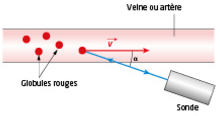
a. D'après la relation donnée, Δf = 2cosα × fE × vG/v, donc :
b. Le sang étant incompressible, la conservation du débit le long d'un même vaisseau impose vG × S = constante (relation donnée). Si une plaque d'athérome réduit localement la section S de la veine ou de l'artère, la vitesse vG du sang à cet endroit doit donc augmenter pour conserver le débit. Ainsi, mesurer vG en plusieurs points d'un même vaisseau et observer une augmentation locale de la vitesse permet de détecter la présence d'un rétrécissement, donc d'un obstacle comme une plaque d'athérome.
c. D'après la relation, vG est proportionnelle à 1/cosα. Au voisinage de α = 90°, cosα tend vers 0 et varie très rapidement avec α (sa dérivée −sinα est alors maximale en valeur absolue) : une petite incertitude sur α se traduit donc par une incertitude très importante, voire incontrôlable, sur vG. Comme α n'est pas connu avec précision, il faut rester à des angles suffisamment éloignés de 90° (donc α < 60°) pour que cette incertitude reste acceptable.
Par ailleurs, comme toute onde sonore, les ultrasons émis par la sonde s'atténuent en traversant les tissus : plus le trajet aller-retour entre la sonde et le vaisseau est long, plus le signal réfléchi reçu par le récepteur est faible. Si le vaisseau visé est trop profond, l'écho renvoyé par les globules rouges devient trop atténué pour être détecté correctement. C'est pourquoi le Doppler sanguin ne peut être pratiqué que sur des veines ou artères suffisamment proches de la peau, pour lesquelles le signal reçu reste exploitable.
d. Pour α = 20°, on a retrouvé vG ≈ 1,02 m·s⁻¹ (question a). Pour α = 30°, à Δf inchangé :
L'écart entre les deux valeurs est d'environ 0,09 m·s⁻¹, soit une variation relative d'environ 9 % pour seulement 10° d'incertitude sur α. Cet écart n'est pas négligeable dans un contexte médical : il confirme que la mesure de vG est très sensible à la connaissance précise de l'angle α, ce qui justifie la nécessité de limiter α (typiquement en dessous de 60°, voir question c) pour obtenir une mesure fiable de la vitesse du sang.
Exercice 45 : Rotation du noyau d'une galaxie
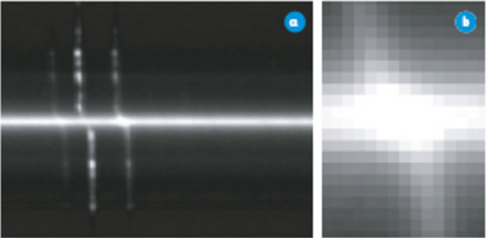
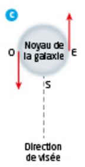
a. La longueur d'onde et la fréquence d'une onde électromagnétique sont reliées par λ = c/f. Pour une petite variation, cette relation donne |Δλ|/λ = |Δf|/f (les variations relatives de λ et de f sont égales en valeur absolue). Or, pour une source de vitesse radiale v petite devant c, l'effet Doppler donne |Δf|/f = v/c. En combinant les deux relations :
b. Sur le document b, la partie supérieure de la raie est décalée vers la gauche, donc vers les courtes longueurs d'onde (vers le bleu). Un tel décalage correspond à un rapprochement de la source : c'est donc la lumière émise par O (qui s'approche de la Terre, d'après le document c). La partie centrale de la raie, à la verticale de la colonne correspondant à λ = 658,4 nm (là où le décalage est nul), correspond au point S, qui n'a aucun mouvement suivant la direction de visée. (Par élimination, la partie inférieure de la raie, décalée vers les grandes longueurs d'onde, correspond à E.)
c. On repère sur le document b un écart total d'environ 5 pixels entre la position de la raie tout en haut et tout en bas du document, la partie centrale (non décalée, point S) se situant à mi-hauteur. L'écart entre le centre et le bord supérieur est donc d'environ 5/2 ≈ 2,5 pixels, soit :
La partie supérieure étant décalée vers les courtes longueurs d'onde (question b) :
d. D'après la relation établie en a), appliquée entre λ (non décalée) et λ' (bord supérieur, lumière émise par O) :
Cette valeur, de l'ordre de la centaine de km/s, est bien cohérente avec les vitesses de rotation typiquement mesurées dans le noyau des galaxies spirales.
Exercice 48 : Déterminer la vitesse d'un hélicoptère par effet Doppler
Les portions de cercles des figures 1 et 2 représentent les fronts de l'onde sonore (maxima de l'élongation) émise par un hélicoptère à un instant donné. Le point A représente l'hélicoptère. Dans le cas de la figure 1, l'hélicoptère est immobile. Dans le cas de la figure 2, il se déplace à la vitesse de valeur vS constante le long de (AO) et vers l'observateur placé au point O. Les mouvements sont étudiés dans le référentiel terrestre.
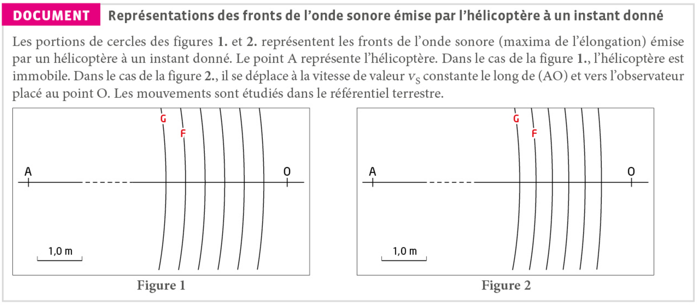
Dans le document, les fronts d'onde notés F et G ont été émis respectivement aux dates t et t'.
Un niveau d'intensité sonore L = 66 dB est mesuré lorsque l'hélicoptère se trouve à une distance d = 300 m de l'observateur. La source sonore (l'hélicoptère) est supposée isotrope (pas de direction d'émission privilégiée) et l'atténuation par absorption n'est pas prise en considération.
1.a. Les deux figures sont réalisées à l'échelle 1/100 : 1,0 cm sur le schéma représente 1,0 m.
Sur la figure 1, les deux fronts d'onde les plus éloignés sont distants de 2,2 cm, soit 2,2 m dans la réalité, ce qui correspond à 5λ₀. On en déduit :
Sur la figure 2, les deux fronts d'onde les plus éloignés sont distants de 1,85 cm, soit 1,85 m dans la réalité, ce qui correspond à 5λ'. On en déduit :
1.b. À partir de la figure 1, la fréquence de l'onde émise étant f₀ = 8,0×10² Hz, on en déduit la célérité du son :
Compte tenu de la faible précision de nos mesures graphiques, ce résultat est cohérent avec la valeur usuelle de la célérité du son dans l'air (≈ 340 m·s⁻¹).
2.a. À partir de la figure 2, la célérité des ondes sonores étant maintenant connue, on peut calculer la fréquence f' de l'onde sonore reçue par l'observateur :
2.b. La fréquence de l'onde reçue étant plus grande que celle de l'onde émise, le son reçu par l'observateur est plus aigu que celui qu'entend le pilote.
3.a. La durée qui sépare les deux dates t et t' correspond à la période T de l'onde sonore (F et G sont deux fronts consécutifs).
3.b. Lorsque l'hélicoptère est immobile, la distance qui sépare les deux fronts d'onde F et G est égale à λ₀, avec λ₀ = vT.
Quand l'hélicoptère est en mouvement, les fronts d'onde sont plus serrés car, pendant la durée T, la source a avancé d'une longueur L = vS×T. Les fronts d'onde, qui se propagent à la même célérité v, sont donc rapprochés de vS×T.
On a donc λ' = λ₀ − L = λ₀ − vS×T.
3.c. De la relation précédente, on extrait vS :
Ce résultat, de l'ordre de 200 km·h⁻¹, est compatible avec les données de l'énoncé (vitesses d'hélicoptère pouvant dépasser 250 km·h⁻¹).
4.a. Puisque la source est isotrope et que l'atténuation par absorption est négligée, on peut écrire le niveau d'intensité sonore sous la forme :
Appelons L' le niveau d'intensité sonore lorsque l'hélicoptère est à la distance d' = 50 m :
En soustrayant les deux expressions, la puissance 𝒫 et l'intensité de référence I₀ s'éliminent :
4.b. Ce type d'atténuation, qui ne dépend que de la distance à une source sonore isotrope (et non d'un phénomène de dissipation d'énergie dans le milieu), s'appelle l'atténuation géométrique : l'énergie de l'onde sonore se répartit sur une sphère de plus en plus grande à mesure qu'elle s'éloigne de la source, d'où une intensité — et donc un niveau sonore — qui diminue avec la distance, même en l'absence d'absorption.
Exercice 49 : Un pendule pour mesurer une vitesse
● Comment mesurer la vitesse d'une source sonore en mouvement par effet Doppler ?
- Ordinateur muni de logiciels d'analyse de son et de traitement de données.
- Buzzer, alimenté par une pile, suspendu à une potence.
- Microphone, casque et mètre ruban.
Un buzzer, assimilé à une source sonore ponctuelle, est accroché à l'extrémité d'un fil de longueur ℓ suspendu à une potence, formant un pendule. Lâché sans vitesse initiale depuis une inclinaison θi par rapport à la verticale, le buzzer passe par la position verticale avec une vitesse de valeur v, horizontale, notée v.
- Le décalage Doppler relatif de fréquence est : |Δf|/f = vS/v, avec vS la valeur de la vitesse de la source et v la célérité du son dans l'air, avec vS ≪ v.
- La mesure de fréquence donne des résultats acceptables si |Δf|/f est au moins de l'ordre de 0,01 soit 1 %.
- La conservation de l'énergie mécanique permet d'établir l'expression de la valeur vS de la vitesse du buzzer lors de son passage par la verticale en fonction de l'inclinaison initiale θi et de la longueur ℓ du pendule : vS = √(2gℓ(1 − cos θi)).
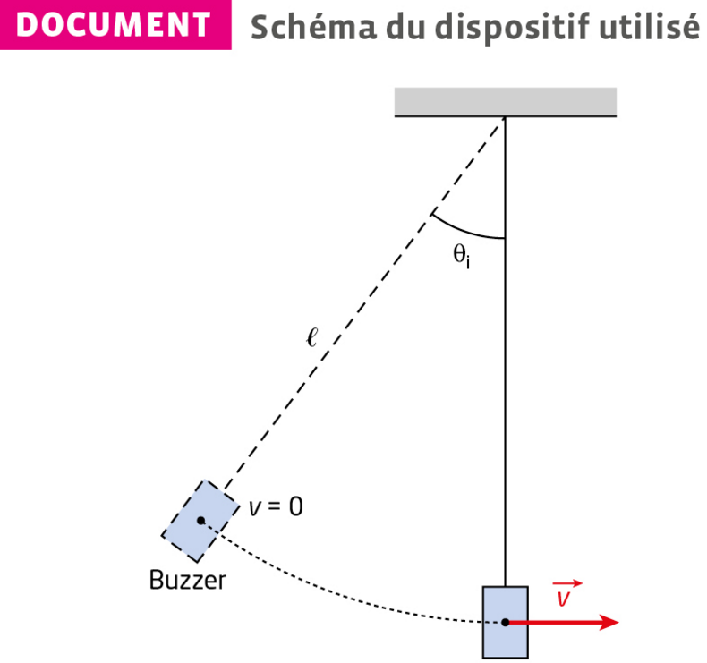
1. La mesure est acceptable si |Δf|/f ≥ 0,01, soit vS/v ≥ 0,01. La vitesse minimale mesurable est donc :
(en reprenant v ≈ 340 m·s⁻¹, valeur usuelle de la célérité du son dans l'air, cohérente avec celle obtenue dans l'exercice précédent).
2. En isolant θi dans vS = √(2gℓ(1 − cos θi)) :
La longueur ℓ n'est pas donnée dans l'énoncé : c'est une caractéristique du pendule réellement utilisé, à mesurer au mètre ruban. À titre d'exemple, pour ℓ = 1,0 m :
Cette valeur numérique n'est qu'un exemple illustratif : à recalculer avec la longueur ℓ effectivement mesurée sur le pendule du laboratoire.
3. Protocole envisageable :
- Placer le microphone dans l'axe horizontal de la trajectoire du buzzer au point le plus bas du pendule (et non à la verticale du point d'attache), de façon à ce que le buzzer se déplace bien selon la direction qui le sépare du microphone lors de son passage : c'est cette condition qui permet à la totalité de la vitesse vS de se traduire en décalage Doppler.
- Enregistrer d'abord le son du buzzer immobile, proche du microphone, pour mesurer la fréquence de référence f0 (à la verticale, pendule au repos).
- Lâcher le pendule sans vitesse initiale depuis une inclinaison θi > θmin et enregistrer le son perçu par le microphone lors du passage du buzzer à la verticale.
- À l'aide du logiciel de traitement de données, effectuer une analyse spectrale (FFT) du signal enregistré au voisinage de cet instant pour déterminer la fréquence perçue f.
- Calculer le décalage relatif |Δf|/f₀ puis en déduire vS = v × |Δf|/f₀ (avec v ≈ 340 m·s⁻¹).
4. Tableau de résultats à compléter en répétant le protocole de la question 3 pour plusieurs inclinaisons initiales θi supérieures à θmin (exemple de structure) :
| θi | … | … | … |
|---|---|---|---|
| v (Doppler, m·s⁻¹) | … | … | … |
Les valeurs numériques dépendent du pendule et des mesures réellement effectuées en séance : ce tableau est un canevas, pas un résultat figé.
5. Pour chaque valeur de θi du tableau, on calcule la vitesse théorique vS = √(2gℓ(1 − cos θi)) (conservation de l'énergie mécanique) et on la compare à la vitesse mesurée par effet Doppler à la question 4.
Si les deux valeurs sont proches (à quelques % près), les mesures sont validées. Un écart plus important peut s'expliquer par :
- les frottements (résistance de l'air, frottement au niveau du pivot du pendule), non pris en compte par le modèle de conservation de l'énergie mécanique, qui tendent à réduire la vitesse réelle par rapport à la valeur théorique ;
- la précision limitée de l'analyse spectrale (résolution en fréquence de la FFT, durée finie du passage du buzzer devant le microphone) ;
- un positionnement du microphone pas parfaitement aligné avec la direction du mouvement du buzzer à la verticale, qui sous-estime la vitesse déduite de l'effet Doppler.
Exercice 50 : Période de rotation de Saturne
● Comment utiliser cet effet pour mesurer la période de rotation de Saturne ?
- Ordinateur muni d'un logiciel de traitement d'images (SalsaJ par exemple).
- Photo du spectre de Saturne avec longueurs d'onde du spectre de référence, à télécharger.
Saturne est la sixième planète du Système solaire par sa distance au Soleil et la deuxième par sa taille avec un diamètre équatorial de 120 960 km (environ 9,5 fois celui de la Terre).
Elle effectue un tour complet autour du Soleil (révolution sidérale) en 29 ans et 167 jours à une distance moyenne de 1,43 milliard de km.
Elle tourne également sur elle-même (rotation sidérale) avec une période T = 10 h 39 min.
Saturne possède des anneaux découverts en 1655 par le physicien néerlandais Christian Huygens (1629-1695) et une cinquantaine de satellites dont le plus gros, Titan, est visible depuis la Terre dans de petits instruments.
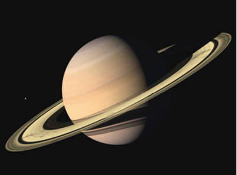
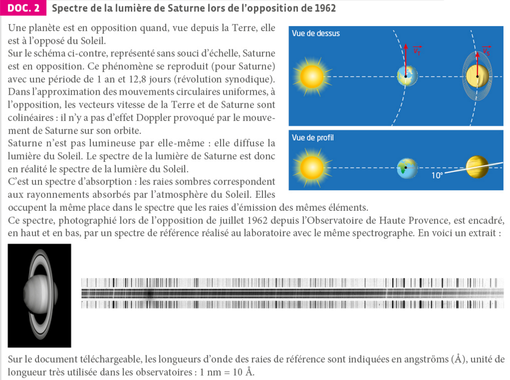
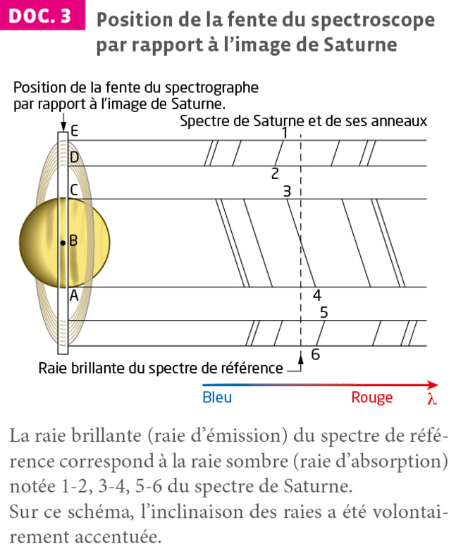
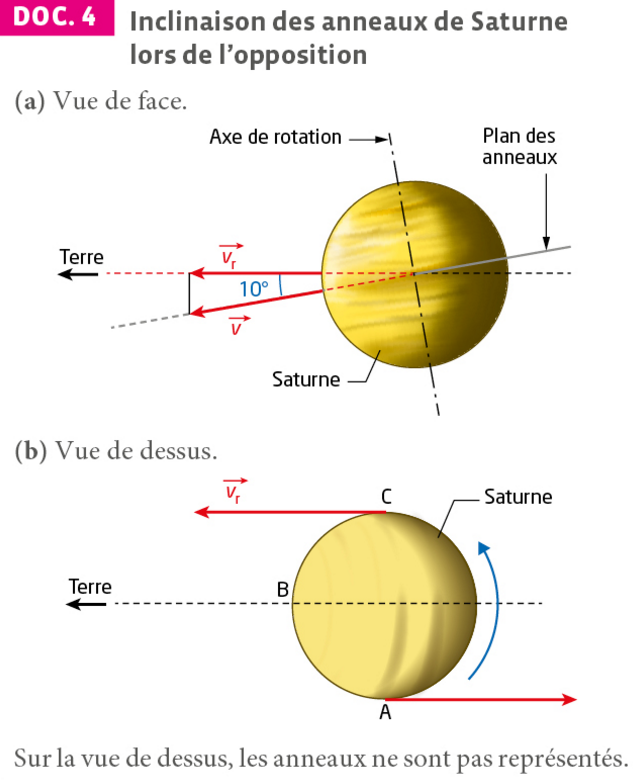
1. À propos du spectre
2. Calcul de la vitesse radiale d'un point de l'équateur
3. Calcul de la période de rotation
1.a) Sur le spectre du DOC. 3, la raie correspondant au point C (moitié supérieure de la fente, du côté des raies 1-2-3) est décalée vers le bleu (longueur d'onde plus courte que la référence) : C s'approche de la Terre. La raie correspondant au point A (extrémité inférieure, du côté des raies 4-5-6) est décalée vers le rouge (longueur d'onde plus grande) : A s'éloigne de la Terre. C'est cohérent avec le DOC. 4(b) : le vecteur vr en C pointe vers la Terre, celui en A pointe dans le sens opposé.
1.b) Le point B est le centre du disque de Saturne : il se trouve sur l'axe de rotation de la planète. Comme tout point situé sur l'axe de rotation d'un solide, sa vitesse due à cette rotation est nulle, donc sa vitesse radiale l'est également. De plus, à l'opposition, il n'y a pas de décalage Doppler dû au mouvement orbital de Saturne (DOC. 2). Le point B n'a donc aucune vitesse radiale : la raie observée à cet endroit — le milieu de la raie 3-4, à la jonction des deux moitiés du spectre — coïncide donc avec la raie du spectre de référence.
1.c) Sur le spectre, l'écart entre la raie et la raie de référence est plus grand pour le point D que pour le point E. La vitesse radiale du point D, à l'intérieur de l'anneau, est donc supérieure à celle du point E, situé à l'extérieur.
1.d) Si l'anneau était un disque solide rigide en rotation, la vitesse d'un point croîtrait avec sa distance à l'axe de rotation (comme pour la planète elle-même) : le point E, plus éloigné de Saturne, devrait alors être plus rapide que D. Or c'est l'inverse qui est observé. Ce résultat est cohérent avec la troisième loi de Kepler : chaque partie de l'anneau se comporte comme un petit satellite en orbite libre et indépendante autour de Saturne, dont la vitesse diminue quand la distance à la planète augmente. On en conclut que l'anneau n'est pas un disque solide, mais qu'il est constitué d'une multitude de petits corps (blocs de glace et de roche) en orbite kepplérienne indépendante autour de Saturne.
2.a) Méthode : on ouvre la photo du spectre (document téléchargeable) dans un logiciel de traitement d'images (SalsaJ). On repère les raies de référence encadrantes, dont les longueurs d'onde λ sont indiquées en Å, et on mesure la position de la raie de référence ainsi que celle de la raie décalée pour deux points diamétralement opposés du bord de la planète (hors anneau). L'étalonnage réalisé à partir des raies de référence connues permet de convertir l'écart de position mesuré en un décalage de longueur d'onde Δλ.
Les valeurs numériques dépendent de la photographie et des raies effectivement mesurées : à titre d'exemple, pour une raie de référence λ ≈ 500 nm, on peut mesurer Δλ ≈ 0,065 nm (soit 0,65 Å).
2.b) En isolant vr dans la relation donnée :
3.a) D'après le DOC. 4, vr = v × cos(10°), donc :
3.b) Un point de l'équateur parcourt la circonférence 2πR à la vitesse v en une période T = 2πR/v, avec R = 120 960/2 = 60 480 km (DOC. 1) :
Cette valeur est en très bon accord avec la période T = 10 h 39 min donnée dans le DOC. 1 (écart inférieur à 1 %).
3.c) Sources d'erreurs principales : la précision de la mesure des positions des raies sur le cliché photographique (résolution du cliché, largeur des raies), l'incertitude sur les longueurs d'onde de référence utilisées pour l'étalonnage, la précision limitée de l'angle d'inclinaison de 10°, et l'hypothèse d'une rotation circulaire uniforme et d'un rayon équatorial parfaitement défini.
Pour améliorer la précision, on peut répéter la mesure sur plusieurs couples de points symétriques (voire plusieurs raies) et moyenner les résultats obtenus, utiliser un spectre de plus haute résolution, et automatiser la mesure des positions de raies par traitement numérique plutôt qu'à l'œil.
Étude de l'effet Doppler à l'aide de deux téléphones
Galaxie d'Andromède
Intensité et niveau sonore
I = P/S (en W·m⁻²)
L = 10·log(I/I₀), avec I₀ = 10⁻¹² W·m⁻² (seuil d'audibilité). Mesure : sonomètre.
Atténuations (toujours A > 0)
Géométrique : A = Lproche − Léloigné = 10·log(Iproche/Iéloigné)
Par absorption : A = Lincident − Ltransmis = 10·log(Iincident/Itransmis)
Effet Doppler — description qualitative
- Source à l'arrêt : λE = λR, fE = fR.
- Source qui approche : fronts d'onde resserrés, fR > fE → son plus aigu.
- Source qui s'éloigne : fronts d'onde écartés, fR < fE → son plus grave.
Décalage Doppler (observateur fixe, source mobile)
Δf = fR − fE
Approche : Δf = fE × v/(vonde − v)
Éloignement : Δf = − fE × v/(vonde + v)
- Le niveau sonore L, exprimé en dB, est une grandeur logarithmique adaptée à l'étendue de sensibilité de l'oreille humaine.
- L'atténuation géométrique traduit la répartition de l'énergie sur une surface croissante ; l'atténuation par absorption traduit une perte d'énergie lors de la traversée d'un milieu matériel.
- Une atténuation est toujours positive.
- L'effet Doppler est une propriété générale des ondes : il se manifeste dès que la distance émetteur-récepteur varie au cours du temps.
- Source qui se rapproche ⟹ fréquence perçue plus élevée (son plus aigu) ; source qui s'éloigne ⟹ fréquence perçue plus faible (son plus grave).
- Le décalage Doppler Δf = fR − fE permet, en pratique, de déterminer la vitesse d'une source à partir des fréquences émise et reçue.
- Intensité sonore I
- Puissance sonore reçue par unité de surface : I = P/S, exprimée en W·m⁻².
- Niveau d'intensité sonore L
- Grandeur logarithmique adaptée à l'étendue de sensibilité de l'oreille humaine : L = 10·log(I/I₀), avec I₀ = 10⁻¹² W·m⁻² le seuil d'audibilité ; mesuré à l'aide d'un sonomètre.
- Atténuation géométrique
- Diminution du niveau sonore due à la répartition de l'énergie sur une surface croissante à mesure que l'on s'éloigne de la source : A = Lproche − Léloigné, toujours positive.
- Atténuation par absorption
- Diminution du niveau sonore due à une perte d'énergie lors de la traversée d'un milieu matériel : A = Lincident − Ltransmis, toujours positive.
- Effet Doppler
- Modification de la fréquence perçue par un récepteur lorsque la distance qui le sépare de la source varie au cours du temps ; propriété générale des ondes (sonores ou électromagnétiques).
- Décalage Doppler Δf
- Différence entre la fréquence reçue et la fréquence émise : Δf = fR − fE ; positif si la source se rapproche (son plus aigu), négatif si elle s'éloigne (son plus grave).
- Fréquence émise fE
- Fréquence de l'onde produite par la source, telle qu'elle serait perçue si la distance source-récepteur restait constante.
- Fréquence reçue fR
- Fréquence de l'onde effectivement perçue par le récepteur, modifiée par l'effet Doppler lorsque la source est en mouvement relatif par rapport à lui.
- Sonomètre
- Appareil de mesure du niveau d'intensité sonore L, exprimé en décibels (dB).
- Seuil d'audibilité I₀
- Intensité sonore de référence, I₀ = 10⁻¹² W·m⁻², correspondant à la plus faible intensité perceptible par l'oreille humaine (L = 0 dB).
- Puissance sonore P
- Énergie sonore transportée par unité de temps par une onde, exprimée en watt (W) ; l'intensité sonore correspondante est I = P/S, où S est la surface traversée.
- Décibel (dB)
- Unité, sans dimension physique réelle, du niveau d'intensité sonore L ; échelle logarithmique adaptée à l'étendue considérable des intensités sonores perceptibles par l'oreille humaine.
- Période T / Fréquence f d'une onde
- La période T (en s) est la durée d'un motif qui se répète identique à lui-même ; la fréquence f = 1/T (en Hz) est le nombre de répétitions par seconde.
- Célérité (vitesse de propagation) vonde
- Vitesse à laquelle une onde se propage dans un milieu donné ; pour le son dans l'air, vonde ≈ 340 m·s⁻¹, une valeur qui ne dépend que du milieu, pas du mouvement de la source ou du récepteur.
▶ Cours 1 — Ondes sonores
Sciences physiques à Stella
▶ Intensité sonore et niveau d'intensité sonore
Florence Raffin
▶ L'effet Doppler, en 2 minutes
ScienceClic
▶ Établir l'expression du décalage Doppler
spcbad
▶ Effet Doppler
CEA
▶ Effet Doppler — Décalage — formules
TERMINALE spé. PC BAC
📝 QCM — Prérequis
Hatier-clic · Caractériser les phénomènes ondulatoires
📝 QCM — Maîtrise des notions
Hatier-clic
L'effet Doppler doit son nom au physicien autrichien Christian Doppler (1803-1853), qui l'a décrit pour la première fois en 1842. Ce phénomène, valable pour toutes les ondes (sonores comme électromagnétiques), a depuis trouvé de nombreuses applications : radars de vitesse, échographie Doppler en médecine, ou encore mesure du décalage spectral des galaxies en astrophysique.